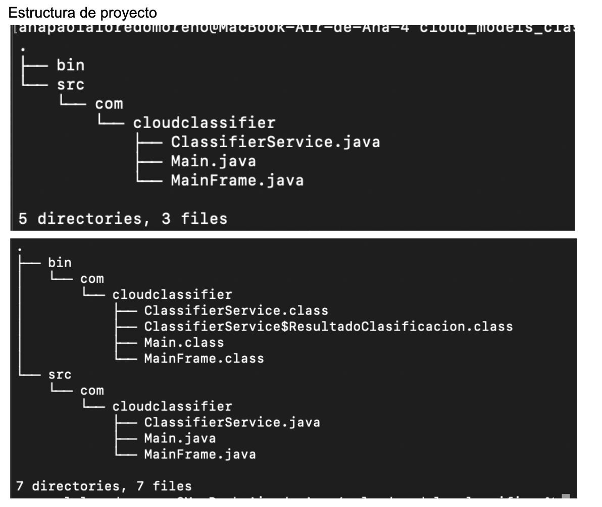
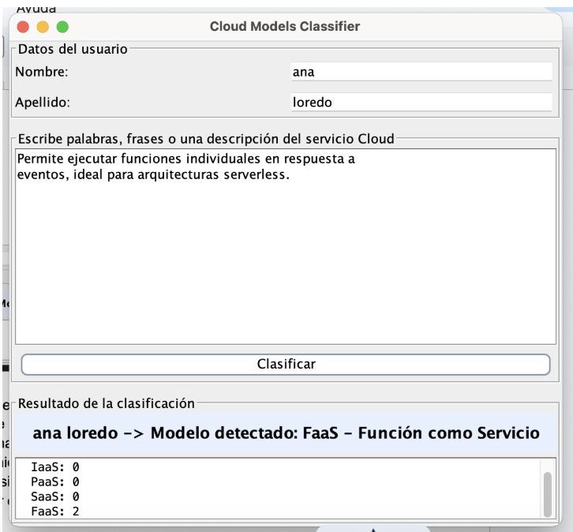
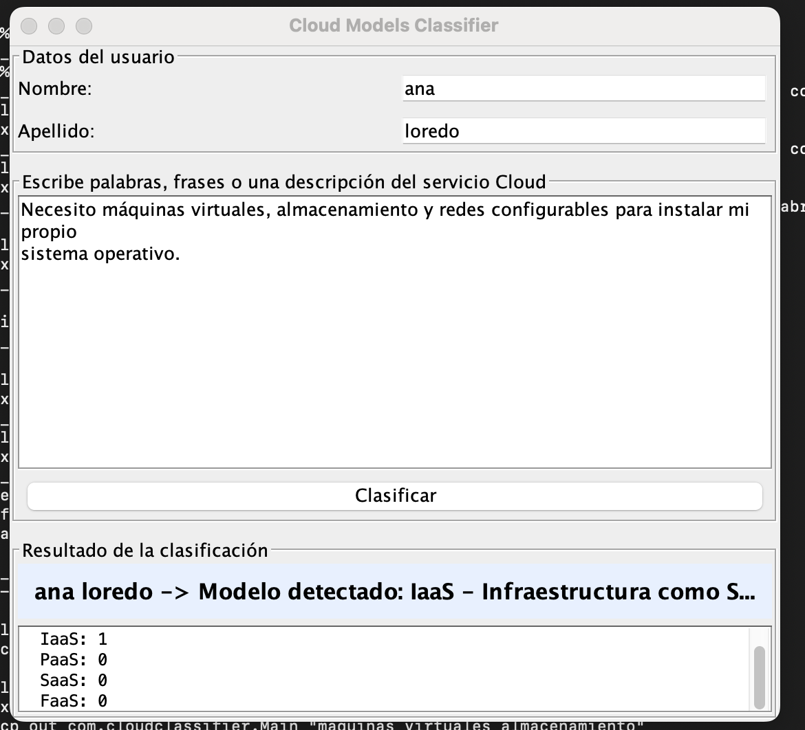
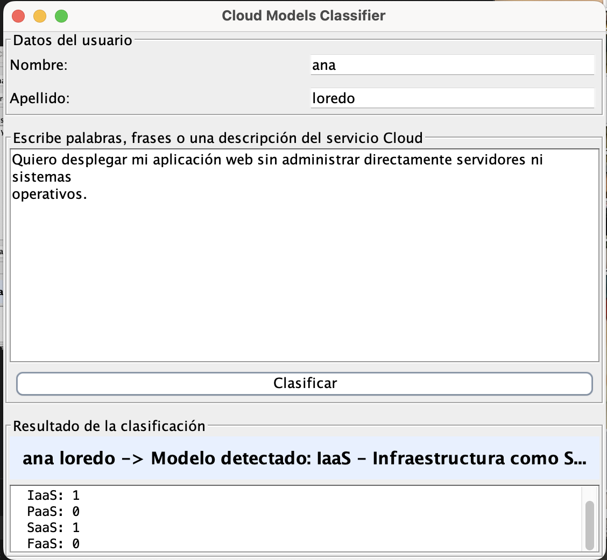
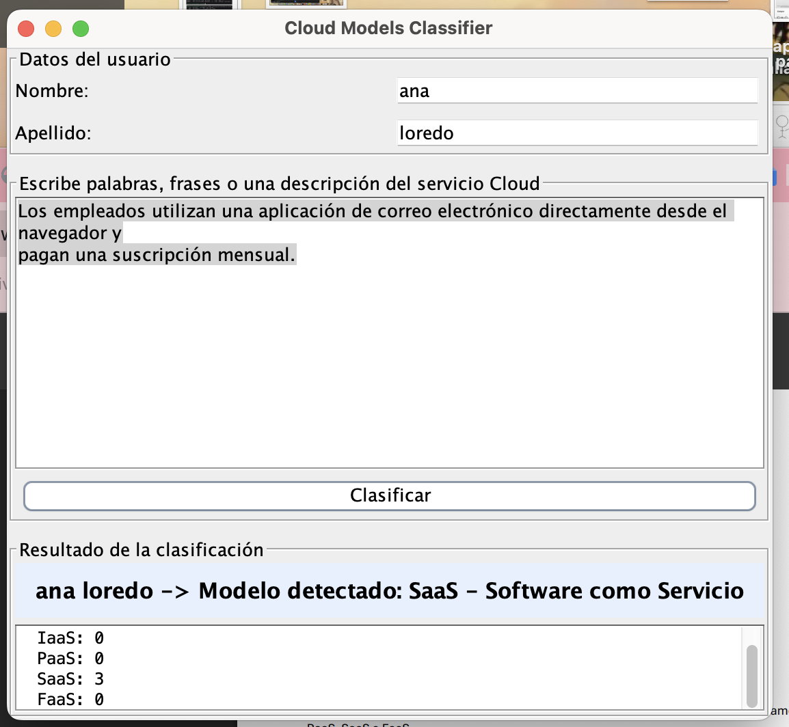
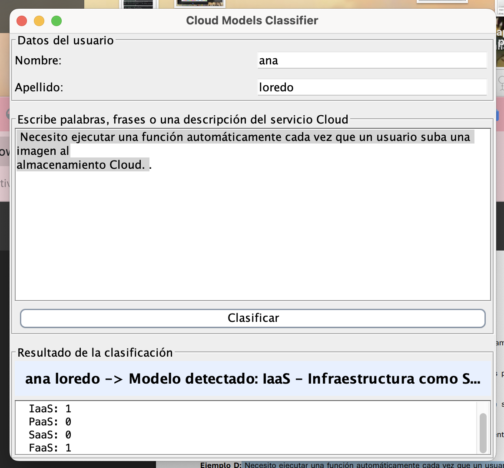
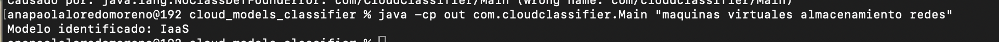

Materia:
Integración de Aplicaciones Computacionales
Profesor:
Dr. Raúl Morales Salcedo
Alumna y Matrícula:
Ana Paola Loredo Moreno – 613772
Doy mi palabra de que he realizado esta actividad con integridad académica.
San Pedro Garza García, N.L, México a 18 de agosto del 2026
Aplicación de escritorio en Java que clasifica descripciones de servicios Cloud en IaaS, PaaS, SaaS o FaaS, desarrollada con apoyo de IA generativa siguiendo el ejercicio guiado.
Se creó el proyecto cloud_models_classifier en
Visual Studio Code, con la estructura estándar
src/com/cloudclassifier/. Se utilizó IA
generativa con el prompt indicado en la guía para generar el
primer prototipo: una aplicación Swing con captura de
nombre/apellido, campo de texto libre y clasificación por
reglas/Regex.
Estructura inicial del proyecto:

El código generado se analizó antes de aceptarse: se
identificaron los 4 métodos de análisis por categoría
(analizarIaaS, analizarPaaS,
analizarSaaS, analizarFaaS), el uso
de expresiones regulares con límites de palabra
(\b) para evitar coincidencias parciales, y la
clase MainFrame encargada de la GUI.
Se compiló y ejecutó la aplicación, verificando que:
Ejecución inicial de la GUI:

Se refactorizó el código generado por la IA incorporando:
GUI (MainFrame.java) separada por completo
de la lógica (ClassifierService.java). La GUI
no contiene reglas de clasificación.
Un método por categoría: analizarIaaS,
analizarPaaS, analizarSaaS,
analizarFaaS.
Se valida que nombre, apellido y descripción no estén vacíos antes de clasificar, mostrando diálogos de advertencia en la GUI.
Excepciones controladas al clasificar; en la versión
CLI se capturan y se reportan por stderr con
código de salida distinto de cero.
Formato: Entrada → Clasificación esperada → Clasificación obtenida → ¿Fue correcta?
| Entrada | Esperado | Obtenido | ¿Correcta? |
|---|---|---|---|
| "Necesito máquinas virtuales, almacenamiento y redes configurables para instalar mi propio sistema operativo." | IaaS | IaaS | Sí |
| "Quiero desplegar mi aplicación web sin administrar directamente servidores ni sistemas operativos." | PaaS | PaaS | Sí |
| "Los empleados utilizan una aplicación de correo electrónico directamente desde el navegador y pagan una suscripción mensual." | SaaS | SaaS | Sí |
| "Necesito ejecutar una función automáticamente cada vez que un usuario suba una imagen al almacenamiento Cloud." | FaaS | FaaS | Sí |
Evidencia de cada caso ejecutado en la GUI:




Se incorporó procesamiento básico de lenguaje natural (NLP) al
ClassifierService, siguiendo el flujo:
texto del usuario → preprocesamiento → tokenización/normalización
→ extracción de características → reglas/scoring → categoría.
Set<String>) de
stopwords en español.java.text.Normalizer, para que "función" y
"funcion" se traten como equivalentes.No se utilizó un LLM para responder la categoría: el objetivo de esta parte fue comprender cómo el preprocesamiento de lenguaje natural mejora un clasificador basado en reglas, manteniendo el enfoque de reglas + scoring.
Se creó CloudClassifierCli.java, que reutiliza la
misma lógica que la GUI a través de
ClassifierService.clasificar(). La arquitectura
final: GUI y CLI son ambas interfaces de usuario que llaman al
mismo componente central de clasificación (NLP + reglas/scoring),
el cual produce el resultado (IaaS/PaaS/SaaS/FaaS).
$ java -cp out com.cloudclassifier.Main "maquinas virtuales almacenamiento redes"
Modelo identificado: IaaS
Evidencia de la ejecución del CLI:

ClassifierService siguiendo la
arquitectura pedida en la Parte 3.El ejercicio permitió comprobar cómo un clasificador basado únicamente en reglas y Regex puede mejorarse de forma significativa incorporando un pipeline de NLP básico, sin necesidad de un modelo de lenguaje. Además, mantener la lógica de clasificación separada de la interfaz (GUI y CLI) permitió reutilizar el mismo componente en ambas interfaces sin duplicar código, cumpliendo con los principios de arquitectura solicitados en la guía.